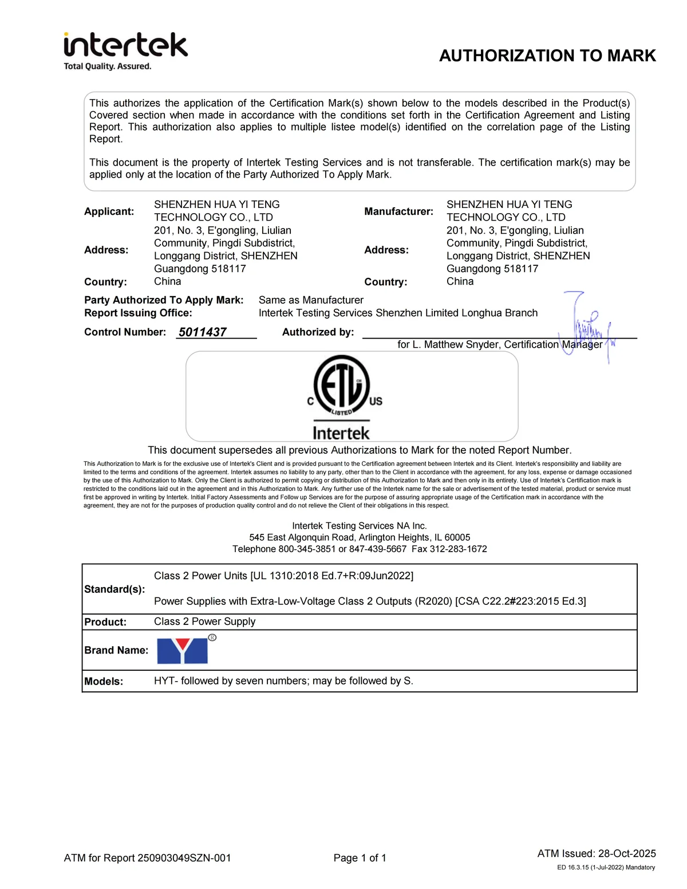

采购与工程选型核心结论：出口北美（美国与加拿大）的外部开关电源适配器，其安规标准选型完全由终端应用场景与输出功率等级决定：凡是应用于 LED 照明、节日灯饰、香薰机及小家电等低压设备（输出视在功率 ≤100VA/100W，直流电压 <60V）的适配器，首选 UL 1310 Class 2 电源标准，可大幅豁免下游整机产品的外壳防火测试；而覆盖更高功率的视听、智能家居控制屏、网络通信及工控设备，则必须强制采用基于危险防范工程学（HBSE）的最新 UL 62368-1 标准。与此同时，所有进入北美市场的外部电源一律强制满足 FCC Part 15 Subpart B（Class B 居住级） 电磁兼容及 DOE Level VI 能效指令，这是美国海关合法清关与亚马逊（Amazon）正规上架的底层红线。
在近年来中美跨境贸易监管日益趋严的背景下，北美海关与边境保护局（CBP）以及各大电商平台（尤其是亚马逊北美站）对电子电气类产品的合规审计达到了前所未有的严苛程度。大量出口商因电源适配器“安规标准选型错误”、“缺乏有效的 NRTL 列名报告”、“FCC 测试报告不合规”或“未完成美国能源部 DOE 能效备案”而遭遇整柜货物扣留退运、Listing 紧急变狗封禁等重大经济损失。
本文将由深圳市华亿腾科技开发有限公司（HYT）资深电源合规工程团队，针对 UL 1310、UL 62368-1、FCC 与 DOE Level VI 展开全面解剖，为您提供系统化、可落地的工程选型与合规采购指南。
一、标准架构对比：UL 1310 Class 2 与 UL 62368-1 的本质区别
在美国与加拿大，电气产品的法定安全认可由美国职业安全与健康管理局（OSHA）认可的国家认可测试实验室（NRTL，如 UL、Intertek ETL、TÜV 等）负责颁发。UL 1310 与 UL 62368-1 虽同属顶级安规标准，但两者的工程底层逻辑与设计目标截然不同：
1. UL 1310：Class 2 安全电源单元标准
UL 1310 专门规范连接到 120V 或 240V 交流电网的 Class 2（2 类安全能量）电源单元。其核心理念根植于美国国家电气规范（NEC Article 725），即“从物理源头上限制输出能量，杜绝触电与电气火灾风险”。
在 UL 1310 标准下，电源在正常工作以及任何单一元器件失效故障状态下，输出端最大视在功率严格受限于 100VA（约 100W）以内，干燥环境最高开路电压不得超过 60V DC（户外或潮湿环境不超过 30V DC）。正因为其能量极低，即使二次侧电路发生短路或导线破损，其电火花能量也不足以引燃常见的可燃物，更不会危及人体生命安全。因此，使用 UL 1310 认证电源的终端产品（如智能灯带、水泵、小家电），其连接线缆可使用低成本的 Class 2 导线，整机塑胶外壳通常无需强制通过昂贵的阻燃防火试验。华亿腾的插墙式电源适配器与IP44 户外防雨电源便广泛采用了 UL 1310 Class 2 架构。
2. UL 62368-1：音视频、信息与通信技术设备安全标准
UL 62368-1 是国际电工委员会 IEC 62368-1 在北美的国家标准转化版，它已于 2020 年 12 月彻底废止并取代了旧时代的 UL 60950-1（IT 设备）与 UL 60065（视听设备）。该标准摒弃了以往死板的“规模型规范”，全面引入了先进的基于危险的安全工程（Hazard-Based Safety Engineering, HBSE）理念。
UL 62368-1 没有 100W 的刚性功率天花板，它将电气能量源精细划分为三个等级：ES1/PS1（可触及安全级）、ES2/PS2（有感知但无伤害级）以及 ES3/PS3（存在严重危险与起火能量级）。外部电源适配器无论是 12W 监控电源，还是 65W、90W、120W 乃至 180W 的高功率适配器（如华亿腾的桌面式电源适配器），均纳入该标准管辖范围。该标准对变压器初次级电气间隙、爬电距离、固体绝缘厚度及耐压隔离（Hi-pot 3000V AC 以上）有着极为系统严密的要求。
二、核心工程参数对照表：UL 1310 vs. UL 62368-1
为了便于采购人员与硬件工程师在开案选型时快速决策，以下为两大标准的核心维度对比：
| 对比维度 | UL 1310（Class 2 电源标准） | UL 62368-1（ICT/AV 安全标准） |
|---|---|---|
| 标准属性与定位 | Class 2 能量受限型专用电源安全标准，侧重二次侧低压低能量防护。 | 音视频、信息通信、商用及消费类电子设备的通用系统级安全标准。 |
| 最大功率与电压限制 | 强制 ≤ 100VA（约 100W）；干燥环境直流电压 < 60V（潮湿环境 < 30V）。 | 无 100W 限制，覆盖 5W 至数百瓦（甚至数千瓦）全功率范围。 |
| 安全工程哲学 | 本质能量限制：限制二次侧能量释放，消除火灾与触电根源。 | HBSE 危害辨识：分类能量等级（PS1~PS3、ES1~ES3），通过针对性物理防护阻隔伤害。 |
| 对终端整机的影响 | 大幅降低下游成本：终端设备外壳与连接线免于复杂的结构防火阻燃认证。 | 若输出能量超过 PS1/ES1 等级，终端整机必须重新评估防火外壳与防护间隙。 |
| 主流适用产品 | LED 灯具、圣诞节日灯饰、香薰加湿器、草坪水泵、电动玩具、低压消费品。 | 笔记本电脑、显示器、工控机、网络路由器、POS 刷卡机、大功率快充充电器。 |
| 常见产品形态 | 插墙式小体积适配器、IP44 防雨淋电源盒（3W ~ 72W）。 | 插墙式及桌面式大功率适配器、GaN 氮化镓快充（12W ~ 180W）。 |
| 加拿大对应标准 | CSA C22.2 No. 223（以 cUL 或 cETL 标识呈现）。 | CSA C22.2 No. 62368-1（以 cUL 或 cETL 标识呈现）。 |
三、北美合规双底线：FCC Part 15B 与 DOE Level VI 六级能效
在满足了安规标准之后，很多出口企业容易忽略电磁兼容与绿色能效要求，而这往往是海关抽检与平台下架的“重灾区”：
1. FCC Part 15 Subpart B：电磁干扰控制
开关电源内部的高频振荡开关管（MOSFET）在快速启闭时会产生强烈的高次谐波噪声。根据美国联邦通信委员会（FCC）法规，所有外部开关电源均属于“无意辐射体（Unintentional Radiators）”，必须符合 FCC Part 15 Subpart B 规定：
- Class B 等级（住宅及商业环境）：家用与办公消费类电源必须满足极为严苛的 Class B 限值标准。测试包括 150kHz~30MHz 的传导骚扰（Conducted Emissions）以及 30MHz~1GHz 以上的辐射骚扰（Radiated Emissions）。华亿腾全系电源在设计时均内置优质共模电感、X/Y 安规电容与高屏蔽变压器，留有至少 6dB 的安全余量。
- SDoC 合规声明：对于外部电源，目前广泛采用供应商符合性声明（SDoC）程序，要求进口商或制造商必须持有由 ISO 17025 认可资质实验室出具的真实有效测试报告备查。
2. DOE Level VI（美国能源部六级能效）及加州 CEC
美国自 2016 年起强制实施外部电源 DOE Level VI 能效门槛，加拿大实施 NRCan 能效法规，美国加州则执行更为严密的 CEC Title 20 法案。其核心考核两项指标：
- 平均转换效率（Active Mode Efficiency）：在 25%、50%、75% 和 100% 四个负载工况下的加权平均效率必须达标（现代绿色电源通常要求高达 88%~92% 以上）。
- 空载待机功耗（No-Load Standby Power）：电源在未连接负载时自身消耗的待机功耗必须严格控制在 0.1W（甚至 0.075W）以下。
- 官方登记备查：合规产品必须在美国能源部合规认证管理系统（CCMS 数据库）完成登记，铭牌上必须清晰印有罗马数字圈标 (VI)。
四、出口北美电源适配器采购与工程避坑清单
外贸团队与供应链买手在向工厂下达采购订单前，务必逐一核实以下 5 大核心合规项：
- 核查 1：明确终端归属安规标准：根据终端产品的功率及下游外壳材质，明确在采购技术协议中写明按 UL 1310 还是 UL 62368-1 制造，避免盲目采购导致下游整机在北美被认定违规。
- 核查 2：验证真实 NRTL 证书与工厂编号：要求供应商提供可在 UL、Intertek 等机构官网直接查验的 Control Number / Listing 证书，确认制造工厂的实体名称与地址与 ISO 9001 体系证书完全一致。
- 核查 3：索取全频段 FCC Class B 测试报告：检查测试报告中的传导与辐射曲线图，确保各频段测试峰值均在限制线下方至少 3~6dB。
- 核查 4：确认外壳材料防火等级：北美市场要求电源塑胶外壳必须采用满足 UL94-V0 耐火阻燃特性的阻燃 PC 或 ABS+PC 环保料。
- 核查 5：评估直接采购持证型号与多重列名（ML）成本效益：买家可直接采购华谊腾持证型号，直接使用 HYT 认证标识与完整测试报告合规清关及上架亚马逊（Amazon）；若品牌方确需以自有品牌独立申请 Multiple Listing (ML)，需额外支付认证机构（如 Intertek）的开案手续费及后续年度维持年费（Annual Listing Fee），建议仅在大型年度稳定项目下评估申请。
五、华亿腾（HYT）如何赋能客户快速开拓北美市场
从零开发一款电源并办理全套 UL/ETL、FCC 及能效测试，单案认证开支往往高达 15,000 ~ 35,000 美元，且需经历 3 ~ 4 个月 的排期与测试整改周期。
作为拥有 18 年沉淀的专业电源制造商，华亿腾（HYT）构建了完备的北美市场准入资质护城河，持有天祥（Intertek）官方颁发的正式 Authorization to Mark 列名标志授权书（Control Number 控制号：5011437）：
- 权威双重安规认证资质（UL 1310 与 UL 62368-1）：华亿腾持有权威有效的 Intertek ETL 官方列名报告，覆盖两大核心安全架构：
- UL 1310 Class 2 授权示例（报告号：
250903049SZN-001）：依据UL 1310:2018 Ed.7+R:09Jun2022与加拿大CSA C22.2#223:2015 Ed.3认证，覆盖HYT-系列全系 Class 2 电源。 - UL 62368-1 最新第 4 版授权示例（报告号：
25120122HKG-001）：依据最新国际第 4 版标准UL 62368-1:2025 Ed.4与CSA C22.2#62368-1:2025 Ed.4认证，覆盖HYT-120至HYT-560等多系列高可靠适配器。
- UL 1310 Class 2 授权示例（报告号：
- 直接采购持证型号与工程可追溯性：买家可直接采购华谊腾持证型号，依托华谊腾在 Intertek 列名名录（Control Number:
5011437）中的现成资质，零认证成本直接使用 HYT 官方认证标识与测试报告顺利完成北美海关清关与亚马逊合规上架。对于确有自有品牌列名需求的大型品牌项目，工程团队提供全套技术文档配合支持，并协助客观评估开案费与维持年费成本。 - 严苛的 100% 满载高低温老化检验：工厂执行严格的 ISO 9001:2015 质量管理体系，每批次产品出厂前均经过 100% 自动 ATE 电性能检测、高压绝缘耐压测试（Hi-pot）以及满载高温老化老化筛选，确保交付良率。
- 合规制造与出口包装规范：标准型号支持 100 台起订（MOQ: 100 pcs），提供美规固定插脚（US Fixed Prongs）与桌面式外壳（Desktop Enclosures），支持激光镭雕定制铭牌（Laser-engraved rating plates）、定制 DC 输出线材/端子及标准工业防护出口包装。

Intertek ETL：UL 1310 Class 2
报告号 250903049SZN-001 | Control No. 5011437

Intertek ETL：UL 62368-1:2025 Ed.4
报告号 25120122HKG-001 | Control No. 5011437
关于北美电源合规的常见问题解答
UL 62368-1 认证的电源适配器可以直接替换 UL 1310 Class 2 电源吗？
不能盲目直接替换。UL 1310 属于美国国家电气规范（NEC）严格定义的 Class 2 安全电源，其最大输出视在功率限制在 100VA（约 100W）以内，干燥环境直流电压低于 60V，具有本质防触电与防火安全，连接的终端下游设备外壳无需昂贵的防火等级认证与特殊布线。而 UL 62368-1 覆盖更高功率与不同能量等级（PS2/PS3），如果选用的 UL 62368-1 电源未特别评估并通过限功率源（LPS）测试，终端整机设备可能需要重新追加结构防火与电气间隙测试。
亚马逊（Amazon）北美站对电源适配器的 FCC 与安全认证有哪些强制审查与下架风险？
亚马逊北美站将电源适配器列为高风险强监管类目。合规团队常态化要求卖家限期（通常为 30 天）提交：(1) 由 ISO 17025 认可实验室出具的 UL 1310 或 UL 62368-1 完整安规测试报告（或 OSHA 认可 NRTL 机构如 UL、ETL 颁发的有效 Listing 证书）；(2) 符合 FCC Part 15 Subpart B（Class B 居住环境等级）的 SDoC 合规测试报告；(3) 清晰展示安规标志、FCC 标识、型号及制造商信息的实物铭牌照片；(4) 美国能源部 DOE Level VI 能效合规注册（CCMS 数据库登记截图）。若无法提供或测试报告不合规，相关 ASIN 将面临立即下架禁售乃至 FBA 库存强制移除。
美国与加拿大采购商如何核验华谊腾的 ETL 与 FCC 认证合规性以应对海关清关与亚马逊审核？
采购商可通过两项标准指引即时核验华谊腾的北美合规资质：(1) 核验电气安规列名（UL 1310:2018 Ed.7 与最新 UL 62368-1:2025 Ed.4）：直接登录天祥（Intertek）全球官方列名目录查询系统（etlwhidirectory.etl.com），输入企业全称"SHENZHEN HUA YI TENG TECHNOLOGY CO., LTD"或华谊腾专属 Control Number（控制号）：5011437，即可在线实时查验有效的 Authorization to Mark 标志授权书及覆盖的型号列表（如报告号 250903049SZN-001 与 25120122HKG-001）；(2) 核验 FCC 与能效合规：联系华谊腾外贸业务团队直接调取权威资质实验室出具的 FCC Part 15 Subpart B（Class B）完整测试报告与 SDoC 符合性声明文件及 DOE CCMS 登记号。出厂产品铭牌均合规印制 cETLus 列名标志与工厂追溯码，确保海关清关与亚马逊平台审核 100% 一次性通过。欢迎查阅我们的中英双语采购问答中心了解更多商务细节。